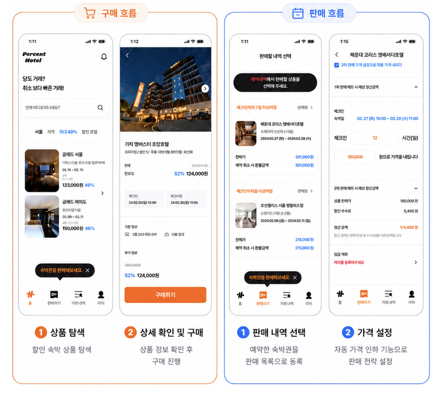

요청을 그대로 구현하기보다, 그 요청이 나온 업무 맥락을 먼저 이해합니다. 그리고 그 개선을 혼자가 아니라 현업 부서와 함께 완성합니다.
맥락에 기반한 요구사항 분석력
사용자가 말하는 '요청'과 실제로 필요한 '요구사항'의 차이를 좁힙니다.
어린이집 보육료 지원 신청 업무 전산화
대용량 데이터 쿼리 성능 개선
실행 계획과 쿼리 구조를 분석해 응답 속도를 측정 가능한 수준으로 개선합니다.
BOM전개 쿼리 성능 개선실적 조회 페이지 성능 개선
타부서와의 협업 역량
전산의 변화를 현업의 업무 중단 없이 함께 완성합니다.
약 700대 PC 업그레이드
왼쪽 폴더를 펼쳐 각 역량의 관련 경험을 확인하세요.
Core Competency
맥락에 기반한 요구사항 분석력
사용자가 말하는 '요청'과 실제로 필요한 '요구사항'은 다를 때가 많습니다. 업무 흐름과 데이터, 사용 맥락을 함께 살펴 진짜 문제를 정의하고 해결합니다.
어린이집 보육료 지원 신청 업무 전산화 — 총무부와 협업해 요청 배경을 분석하고, 신청·전자결재 연동까지 전산화
맥락에 기반한 요구사항 분석력
어린이집 보육료 지원 신청 업무 전산화
한솔섬유㈜ · 총무부 협업 · 사내 시스템 운영개발
C#ASP.NETcshtmlMSSQL전자결재 연동
상황
총무부에서 수기로 관리하던 어린이집 보육료 지원 신청 업무를 시스템으로 전환하기 위해, 화면 기획안을 전달받았습니다.
과제
전달받은 기획안대로 바로 개발할 수도 있었지만, 요청이 나오게 된 배경을 먼저 이해하는 것이 우선이라고 판단했습니다.
행동
기획안대로 곧장 개발하지 않고 총무부와 미팅을 진행했습니다. 그 결과 단순히 신청 화면이 필요한 것이 아니라, ① 종이 신청서가 인수인계 과정에서 분실되고 ② 직원이 작성한 신청서를 들고 16층 총무부까지 직접 방문해 결재를 받아야 하는 불편이 진짜 문제임을 파악했습니다. 화면만으로는 불편이 해결되지 않는다고 보고, 신청 기능에 더해 전자결재 연동까지 제안하고 함께 구현했습니다.
결과
직원들이 신청부터 결재까지 시스템에서 한 번에 처리할 수 있게 되었고, 직접 방문해 결재받던 절차가 사라져 업무가 더 효율적으로 개선되었습니다.
Core Competency
대용량 데이터 쿼리 성능 개선
데이터와 화면의 응답 속도를 감으로 넘기지 않고, 실행 계획과 쿼리 구조를 분석해 병목을 찾아 측정 가능한 수준으로 개선합니다.
BOM전개 쿼리 성능 개선 — BOM 전개 로직을 재설계해 쿼리 성능 약 97% 개선
실적 조회 페이지 성능 개선 — 실행 계획 분석으로 병목을 찾아 조회 성능 약 85% 개선
대용량 데이터 쿼리 성능 개선
BOM전개 쿼리 성능 개선
㈜이젬코 · MES 운영개발 · 2026.02 – 2026.03
C#WinForm.NETMSSQL
상황
제품 구성을 펼치는 BOM(자재 명세서) 전개 조회가, 항목마다 최신 BOM을 찾는 로직 때문에 데이터가 쌓일수록 응답이 느려졌습니다.
과제
대용량 BOM 데이터에서도 전개 조회가 빠르게 동작하도록 쿼리를 개선해야 했습니다.
행동
최신 BOM을 조회하는 로직을 CTE 내부의 CROSS APPLY + TOP 1 구조로 다시 설계해, 불필요한 중복 조회를 제거했습니다.
결과
BOM 전개 쿼리 성능을 약 97% 개선했습니다.
대용량 데이터 쿼리 성능 개선
실적 조회 페이지 성능 개선
한솔섬유㈜ · MES 운영개발 · 2024.05 – 2025.07
C#ASP.NETcshtmlJavaScriptMSSQL
상황
현장에서 자주 사용하는 공정 실적 조회 페이지의 응답이 지연되어, 조회할 때마다 대기 시간이 길어졌습니다.
과제
사용 빈도가 높은 조회 화면의 응답 속도를 끌어올려야 했습니다.
행동
실행 계획(Execution Plan)에서 Key Lookup이 병목임을 확인하고, 조회 패턴에 맞는 보조(커버링) 인덱스를 추가해 불필요한 조회 비용을 줄였습니다.
결과
실적 조회 성능을 약 85% 개선했습니다.
Core Competency
타부서와의 협업 역량
전산의 개선은 결국 현업의 업무 방식과 맞닿아 있습니다. 일정과 매뉴얼, 발주를 부서와 함께 조율하며 업무 중단 없이 변화를 완성합니다.
약 700대 PC 업그레이드 — 부서별 일정 조율과 매뉴얼 배포로 전사 PC를 Windows 11로 전환
타부서와의 협업 역량
약 700대 PC 업그레이드
한솔섬유㈜ · 전사 보안 환경 개선
상황
Windows 10 보안 지원 종료에 대비해 약 700대 규모의 전사 PC를 Windows 11 환경으로 전환해야 했습니다.
과제
부서별 업무를 멈추지 않으면서 대규모 PC 전환을 완료하는 것이 핵심이었습니다.
행동
업그레이드 가능/불가 PC를 분류하고, 부서별 일정을 조율했으며, 사용자 매뉴얼을 배포하고 교체 대상 PC를 발주했습니다.
결과
약 700대의 전사 PC를 Windows 11 환경으로 전환했습니다.
Resume
교육 · 경력 · 자격 · 외국어
전공 기반과 실무 경력, 직무 관련 자격을 간략히 정리했습니다.
왼쪽 폴더에서 학력·경력·자격증·외국어를 각각 확인할 수 있습니다.
Education
학력 · 교육
아주대학교 소프트웨어학과
전공심화 졸업 · 학점 3.78 / 4.5
2016.03 – 2023.02
야놀자 백엔드 개발 과정
Java / Spring Boot 백엔드 과정 우수 수료 (2 / 65)
2023.07 – 2024.01
Career
경력
㈜이젬코 · 운영개발 주임
MES 운영개발 (C#, WinForm, .NET, MSSQL)
2026.02 – 2026.03
한솔섬유㈜ · IT 사원
사내 MES·인사 시스템 운영개발 및 전산 운영
2024.05 – 2025.07
Certificate
자격증
SQL개발자 (SQLD)
한국데이터베이스진흥센터
2025.09
TOPCIT 3수준 (480점)
정보통신기획평가원
2022.10
1종 보통 운전면허
경찰청 운전면허시험관리단
2026.06
Language
외국어
TOEIC Speaking
130점 · Intermediate Mid 3
2025.09
Portfolio
포트폴리오
팀·인턴 프로젝트로 진행한 웹 서비스 결과물입니다.
숙박 양도 웹앱
15인 팀 프로젝트 · 12개 팀 중 2등
라이선스 발급 관리 플랫폼
웹 개발 인턴 프로젝트 · AWS EC2 운영
왼쪽 폴더를 펼쳐 각 프로젝트의 상세 내용을 확인하세요.
Portfolio
숙박 양도 웹앱
2023.12 – 2024.01 · 15인 팀 프로젝트 (12개 팀 중 2등)

취소·환불이 불가능한 숙박 예약 건을 사용자 간 양도할 수 있도록 돕는 웹 플랫폼입니다.
문제 — 숙박권 양도가 비공식 커뮤니티 중심으로 이루어져 신뢰성과 편의성이 낮음
역할 — 인증/인가, 실시간 알림, REST API, 문서화, CI/CD 담당
해결 — JWT 인증, FCM 알림, REST Docs, GitHub Actions 기반 배포 구성